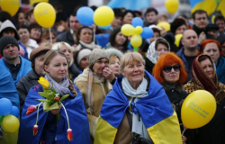
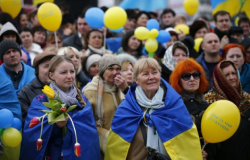

Україна
в майбутньому
Аналізуємо минуле, теперішнє та майбутнє.Формуємо образ нової успішної України. Досліджуємо формування менталітету, козацтво та розвиток технологій в одному проекті!
Дізнатися більше
Минуле
Формування ментальності українців
Українське козацтво - унікальне явище в історії
Козаки - це державність!
Саме козаки були авторами та реалізато- рами ідеї української держави та її легіти- мації у міжнародній спільноті як незалежної держави

Цінності
Відвага, вірність, здатність до самопожертви, любов до Батьківщини - такі характе- ристики успадкував укра- їнський народ у козаків
Відвага та безстрашність
Турецький літописець Наїма писав про запорожців: “Можна впевнено сказати, що неможливо знайти на цілій землі сміливіших людей, які так мало б дбали про мвоє життя і так мало боялися смерті”
Прагнення до неба
Блакитне небо на прапорі України та жовте жито, ще одна ознака нашого прагнення думками відірватися від землі та полетіти в безкрайнє небо, вийти за межі простору.
Саме тому українці реалізовували прагнення вийти за межі за допомогою розвитку авіаконструкторських заводів.
Підприємство "Антонов" створило гордість України, який став сиволом українського непереможного духу - "Мрію" - найбільший транспортний літак у світі.

Сьогодення: період трансформації
Хто ми сьогодні?
Ми показуємо усьому світові як говорити правду в очі та бути вірним своєму народу, своєму вибору та стояти за нього - ми чесні з собою та іншими, відважні та стоїмо один за одного
Ми подаємо приклад всьому світові, як жити в умовах невизначеності, та ще й знаходимо в собі сили підказувати іншим, що робити для підтримки миру у всьому світі - ми креативні.
Ми не піддаємось залякуванню та продовжуємо маленькими кроками досягати своєї мети - ми сильні духом, в нас є воля. Свобода - найбільша цінність для нас.
Ми можемо жити без вказівок, та самоорганізовуватись, спираючись лише на гуманістичні, людські цінності - ми за мир у всьому світі, і ми зможемо показати, як цього досягти.
Продовжуємо жити, працювати та надихати весь світ!


"Вчора ми втратили, на жаль, нашу "Мрію". Але стару "Мрію". А нову ми зараз будуємо. Слава Україні!"

Діджиталізація в Україні
В період трансформації Україна продовжує розквітати вже в новому, цифровому світі
Майбутнє
Майбутнє України - це її люди!
Ми - нація вільних людей, які будують нову свою країну!
 
